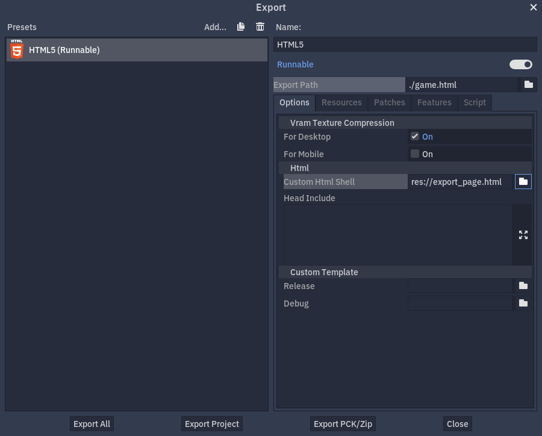

Trang HTML tùy chỉnh cho bản xuất Web
Dù các export template Web cung cấp một trang HTML mặc định hoàn toàn có thể khởi chạy dự án mà không cần tùy chỉnh gì thêm, việc tạo một trang HTML tùy chỉnh vẫn có thể có lợi. Dù bản thân game hiện chưa thể dễ dàng được điều khiển trực tiếp từ bên ngoài, một trang như vậy cho phép tùy chỉnh quá trình khởi tạo engine.
Một số trường hợp sử dụng mà việc tùy chỉnh trang mặc định hữu ích bao gồm:
Tải tệp từ một thư mục khác với thư mục của trang;
Tải tệp
.zipthay vì tệp.pcklàm main pack;Tải engine từ một thư mục khác với thư mục của tệp main pack;
Thêm nút nhấp-để-chơi để game có thể được khởi động ở chế độ toàn màn hình;
Tải một số tệp bổ sung trước khi engine khởi động, giúp chúng có sẵn trong hệ thống tệp của dự án sớm nhất có thể;
Truyền các đối số dòng lệnh tùy chỉnh, ví dụ
-sđể khởi động một scriptMainLoop.
Trang HTML mặc định có trong repository Godot Engine tại /misc/dist/html/full-size.html nhưng template sau đây có thể được dùng làm một ví dụ đơn giản hơn nhiều:
<!DOCTYPE html>
<html>
<head>
<title>My Template</title>
<meta charset="UTF-8">
</head>
<body>
<canvas id="canvas"></canvas>
<script src="$GODOT_URL"></script>
<script>
var engine = new Engine($GODOT_CONFIG);
engine.startGame();
</script>
</body>
</html>
Thiết lập
Như ví dụ trên cho thấy, đây phần lớn là một tài liệu HTML thông thường, với vài placeholder cần được thay thế trong quá trình xuất, một phần tử html <canvas> và một ít mã JavaScript đơn giản gọi lớp Engine().
Các placeholder bắt buộc duy nhất là:
$GODOT_URL: Tên tệp JavaScript chính, cung cấp lớpEngine()cần thiết để khởi động engine và phải được đưa vào HTML dưới dạng một<script>. Tên này được tạo từ Export Path trong quá trình xuất.$GODOT_CONFIG: Một đối tượng JavaScript chứa các tùy chọn xuất và có thể được ghi đè sau đó. XemEngineConfigđể biết danh sách đầy đủ các giá trị ghi đè.
Các placeholder tùy chọn sau sẽ bật một số tính năng bổ sung trong template HTML tùy chỉnh của bạn.
$GODOT_PROJECT_NAME: Tên dự án như được định nghĩa trong cài đặt Name ở Project Settings > Application > Config. Bạn nên dùng nó làm<title>trong template.$GODOT_HEAD_INCLUDE: Một chuỗi tùy chỉnh được chèn vào tài liệu HTML ngay trước thẻ đóng<head>. Chuỗi này được tùy chỉnh trong tùy chọn xuất ở mục Html / Head Include. Dù bạn hoàn toàn kiểm soát trang HTML mình tạo, biến này vẫn hữu ích để cấu hình các phần của phần tử HTMLheadtừ trình chỉnh sửa Godot, ví dụ cho các export preset Web khác nhau.$GODOT_SPLASH: Đường dẫn tới hình ảnh dùng làm boot splash như được định nghĩa trong cài đặt Image ở Project Settings > Application > Boot Splash.$GODOT_SPLASH_COLORMàu nền của màn hình splash như được định nghĩa trong cài đặt BG Color ở Project Settings > Application > Boot Splash, được chuyển thành mã màu hex.$GODOT_SPLASH_CLASSES: Placeholder này cung cấp một chuỗi gồm tên các cài đặt và giá trị của chúng, ảnh hưởng tới màn hình splash. Chuỗi này được dùng như một tập tên lớp CSS, cho phép tạo kiểu cho hình ảnh splash dựa trên các cài đặt splash của dự án. Các cài đặt sau từ Project Settings > Application > Boot Splash được cung cấp, biểu diễn bằng các tên lớp bên dưới tùy theo giá trị boolean của cài đặt:Show Image:
show-image--true,show-image--falseStretch Mode:
fullsize--true(nếu không phải Disabled),fullsize--falseUse Filter:
use-filter--true,use-filter--false
Khi trang tùy chỉnh đã sẵn sàng, bạn có thể chọn nó trong tùy chọn xuất ở mục Html / Custom Html Shell.

Khởi động dự án
Để có thể khởi động game, bạn cần viết một script khởi tạo engine — mã điều khiển. Quá trình này gồm ba bước, nhưng như được trình bày ở đây, phần lớn các bước có thể bỏ qua tùy mức độ tùy chỉnh cần thiết.
Xem tài liệu tham khảo lớp HTML5 shell để biết danh sách đầy đủ các phương thức và tùy chọn có sẵn.
Trước tiên, engine phải được tải, sau đó cần được khởi tạo, và cuối cùng dự án mới có thể được khởi động. Bạn có thể thực hiện thủ công từng bước này với mức kiểm soát cao. Tuy nhiên, trong trường hợp đơn giản nhất, bạn chỉ cần tạo một instance của lớp Engine() với cấu hình đã xuất, rồi gọi phương thức engine.startGame, có thể ghi đè bất kỳ tham số EngineConfig nào.
const engine = new Engine($GODOT_CONFIG);
engine.startGame({
// Optional override configuration, for example:
// unloadAfterInit: false,
// canvasResizePolicy: 0,
// ...
});
Đoạn mã này tự động tải và khởi tạo engine trước khi khởi động game. Nó dùng cấu hình đã cho để tải engine. Phương thức engine.startGame là bất đồng bộ và trả về một Promise. Điều này cho phép mã điều khiển theo dõi xem game đã được tải đúng chưa mà không chặn việc thực thi hay phải dựa vào polling.
Nếu dự án của bạn cần kiểm soát đặc biệt các đối số khởi động và tệp dependency, bạn có thể dùng phương thức engine.start thay thế. Lưu ý rằng phương thức này không tự động tải trước tệp pck, nên có lẽ bạn sẽ muốn tải trước nó thủ công (cùng mọi tệp bổ sung khác) bằng phương thức engine.preloadFile.
Bạn cũng có thể tùy chọn gọi thủ công engine.init để thực hiện các hành động cụ thể sau khi module được khởi tạo, nhưng trước khi engine khởi động.
Quá trình này phức tạp hơn một chút, nhưng cho bạn toàn quyền kiểm soát quá trình khởi động engine.
const myWasm = 'mygame.wasm';
const myPck = 'mygame.pck';
const engine = new Engine();
Promise.all([
// Load and init the engine
engine.init(myWasm),
// And the pck concurrently
engine.preloadFile(myPck),
]).then(() => {
// Now start the engine.
return engine.start({ args: ['--main-pack', myPck] });
}).then(() => {
console.log('Engine has started!');
});
Để tải engine thủ công, phải gọi phương thức tĩnh Engine.load(). Vì phương thức này là tĩnh, nhiều instance engine có thể được tạo ra nếu chúng dùng chung một wasm.
Ghi chú
Theo mặc định, không thể tạo nhiều instance vì engine bị giải phóng (unload) ngay sau khi được khởi tạo. Để ngăn điều này, hãy xem tùy chọn override unloadAfterInit. Bạn vẫn có thể giải phóng engine thủ công sau đó bằng cách gọi phương thức tĩnh Engine.unload(). Việc giải phóng engine sẽ giải phóng bộ nhớ trình duyệt bằng cách gỡ bỏ các tệp không còn cần thiết sau khi instance đã được khởi tạo.
Tùy chỉnh hành vi
Trong môi trường Web, có thể dùng một số phương thức để đảm bảo game hoạt động như mong muốn.
Nếu bạn nhắm tới một phiên bản WebGL cụ thể, hoặc chỉ muốn kiểm tra xem WebGL có khả dụng hay không, bạn có thể gọi phương thức Engine.isWebGLAvailable(). Phương thức này có thể nhận thêm một đối số tùy chọn để kiểm tra một phiên bản chính (major version) cụ thể của WebGL.
Vì tệp thực thi thật không tồn tại trong môi trường Web, engine chỉ lưu một tên tệp ảo được tạo từ tên gốc của các tệp engine đã tải. Giá trị này ảnh hưởng đến kết quả của phương thức OS.get_executable_path() và xác định tên của main pack được khởi động tự động. Có thể dùng tùy chọn override executable để ghi đè giá trị này.
Tùy chỉnh cách hiển thị
Có thể dùng một số tùy chọn cấu hình để tùy chỉnh thêm giao diện và hành vi của game trên trang của bạn.
Theo mặc định, phần tử canvas đầu tiên trên trang sẽ được dùng để kết xuất. Để dùng một phần tử canvas khác, có thể dùng tùy chọn override canvas. Tùy chọn này yêu cầu một tham chiếu đến chính phần tử DOM đó.
const canvasElement = document.querySelector("#my-canvas-element");
engine.startGame({ canvas: canvasElement });
Cách engine thay đổi kích thước canvas có thể được cấu hình thông qua tùy chọn override canvasResizePolicy.
Nếu game của bạn mất một khoảng thời gian để tải, việc hiển thị một giao diện tải tùy chỉnh theo dõi tiến trình có thể sẽ hữu ích. Điều này có thể thực hiện bằng tùy chọn callback onProgress, cho phép thiết lập một hàm callback được gọi định kỳ khi engine tải thêm byte mới.
function printProgress(current, total) {
console.log("Loaded " + current + " of " + total + " bytes");
}
engine.startGame({ onProgress: printProgress });
Lưu ý rằng trong một số trường hợp total có thể bằng 0. Điều này có nghĩa là không thể tính được giá trị đó.
Nếu game của bạn hỗ trợ nhiều ngôn ngữ, có thể dùng tùy chọn override locale để buộc dùng một locale cụ thể, miễn là bạn có một chuỗi mã ngôn ngữ hợp lệ. Bạn nên dùng logic phía server để xác định ngôn ngữ mà người dùng có thể ưa thích. Bằng cách này, mã ngôn ngữ có thể được lấy từ HTTP header Accept-Language, hoặc được xác định bởi một dịch vụ GeoIP.
Debug
Để gỡ lỗi các dự án đã xuất, việc đọc luồng đầu ra chuẩn và luồng lỗi do engine tạo ra có thể sẽ hữu ích. Điều này tương tự như đầu ra hiển thị trong cửa sổ console của trình chỉnh sửa. Theo mặc định, console.log và console.warn chuẩn lần lượt được dùng cho luồng đầu ra và luồng lỗi. Bạn có thể tùy chỉnh hành vi này bằng cách đặt các hàm riêng để xử lý thông điệp.
Dùng tùy chọn override onPrint để đặt hàm callback cho luồng đầu ra, và tùy chọn override onPrintError để đặt hàm callback cho luồng lỗi.
function print(text) {
console.log(text);
}
function printError(text) {
console.warn(text);
}
engine.startGame({ onPrint: print, onPrintError: printError });
Khi xử lý đầu ra của engine, hãy lưu ý rằng có thể bạn không muốn in nó ra trong sản phẩm hoàn chỉnh.